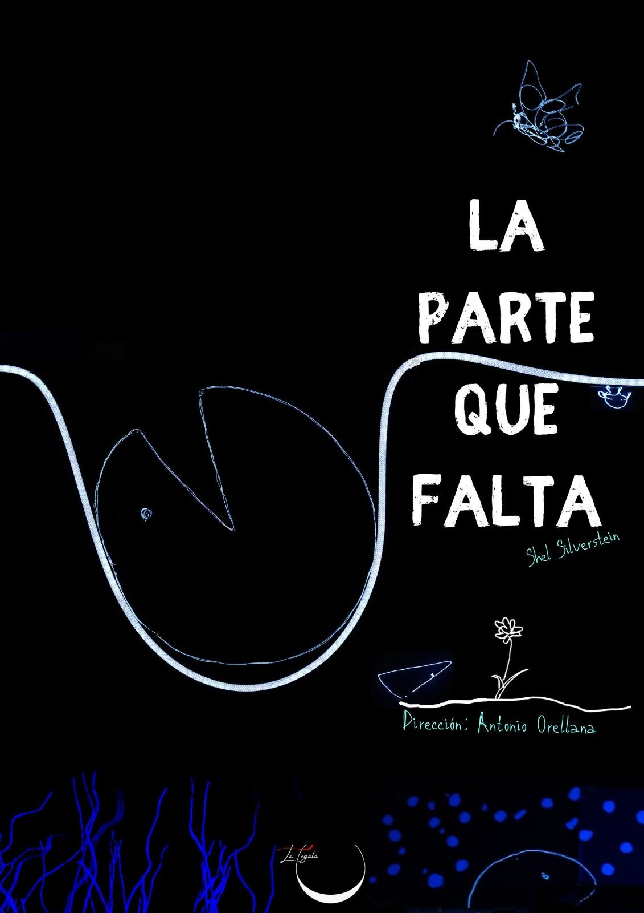
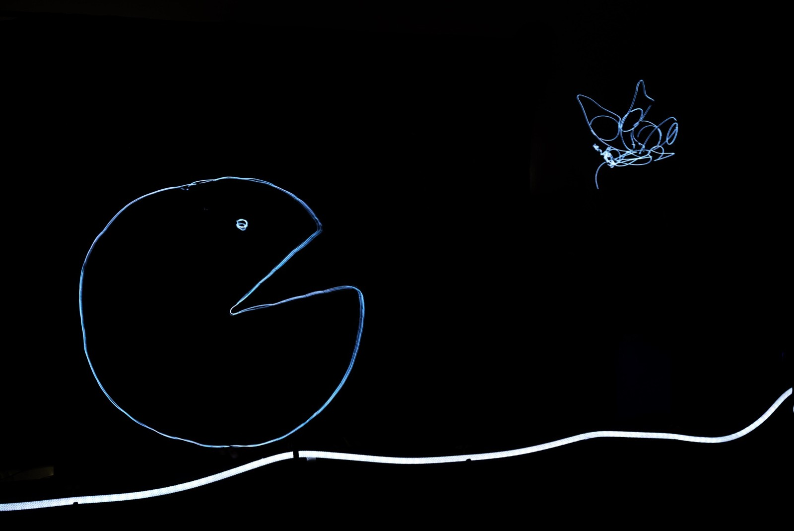
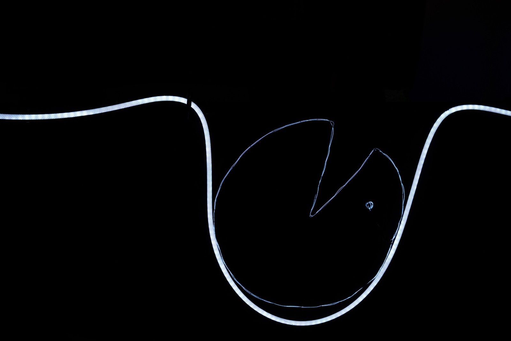
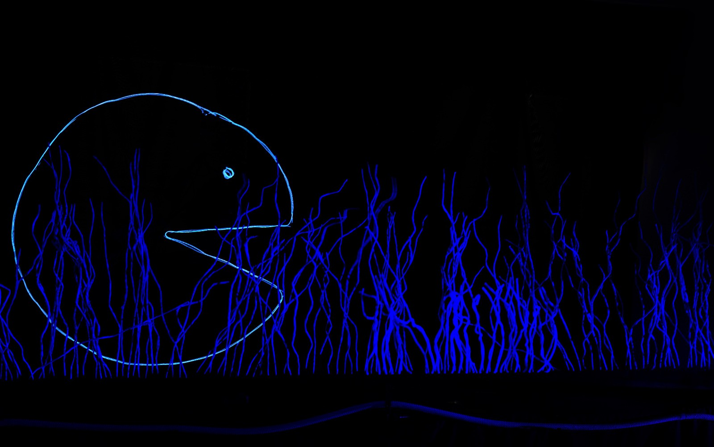

La Parte Que Falta

La Parte Que Falta se estrenó el 18 de octubre de 2024 en el Festival de Teatro de Títeres Harionetas. Es un espectáculo teatral familiar, para la infancia y la adolescencia, que combina lo mejor de la narración visual y emocional. Una puesta en escena concebida con hilos de neón y luz negra, aportando una dimensión adicional de belleza y originalidad.
Público Objetivo:
Edad recomendada, actuaciones familiares: a partir de 6 años
Edad recomendada para actuaciones escolares: a partir de 8.
Ideal para espacios culturales, festivales o eventos educativos.
Duración: 55 minutos
Esta adaptación teatral de la obra gráfica de Shel Silverstein, invita a una reflexión íntima sobre la felicidad, el amor y la autenticidad personal.
Sinopsis
Un Círculo incompleto busca incansablemente una “parte” que le falta.
En su viaje, descubre la importancia de aceptar a otros y de encontrar la plenitud en el camino, y no en la meta. En otro lugar, la Parte Que Falta, espera encajar en alguien, incluso en las criaturas completas. Repara en la autonomía, en la identidad y en el amor incondicional, al alcance de todos, que no nos exige encajar. ¡Y a rodar!


Es una metáfora de la vida y las relaciones humanas, tan sencilla como poderosa, que habla de la libertad y el respeto hacia las personas. Hay partes que no quieren ser de nadie y prefieren caminar solas. Partes que no se sujetan bien y se pierden, otras se sujetan con demasiada fuerza y se rompen. Partes que por más que se insista no encajan. Otras que no están dispuestas a perder su identidad.
La puesta en escena habla con tanta economía que interpretas el camino que más te conviene: puede abordar temas como la búsqueda, el amor, la amistad, las relaciones, proyección, idealización, soledad, rechazo, superación, aspiraciones, deseos, necesidades, consciencia, plenitud, simplicidad, pone en tela de juicio la cultura del éxito; exigencias atemporales y modernas que tanto saturan a adultos y a niños de hoy. En lo profundo, a nadie le faltan partes. Todos somos seres valiosos y completos.

FICHA ARTÍSTICA
EQUIPO ARTÍSTICO
Narrador y voces (off) — Jesús Alves Reguera, Antonio Orellana
Manipuladores — Antonella Siano, Agustín Salvago, Fefa Toledo, J. Carlos Sánchez
EQUIPO TÉCNICO
diseño y construcción de marionetas — José Antonio Reguera
atrezzo/escenografía — Nadezhda Neyra Cano
música — Alba Rapela, IA generation
sonidos “Lanzarote” — Antonio Orellana
costura — Mª Antonia Landa
diseño gráfico — Daniel García
fotografía — Felipe de la Cruz
producción — Compañía LA TEGALA (Haría, Las Palmas)
dirección y adaptación — ANTONIO ORELLANA